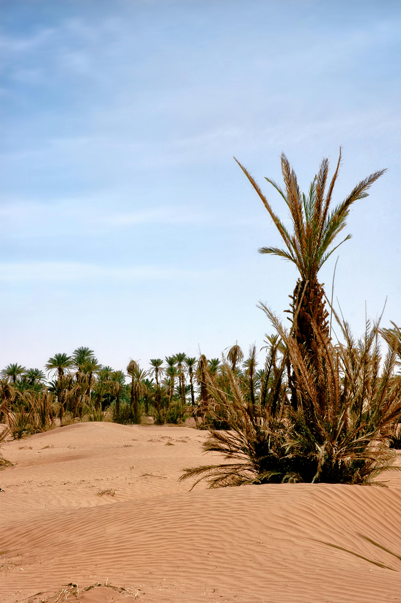
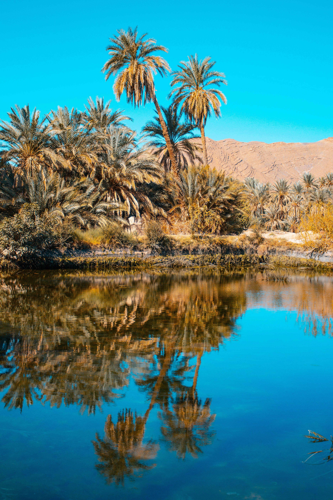
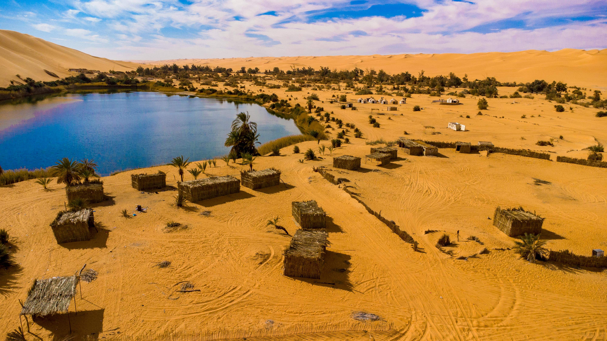
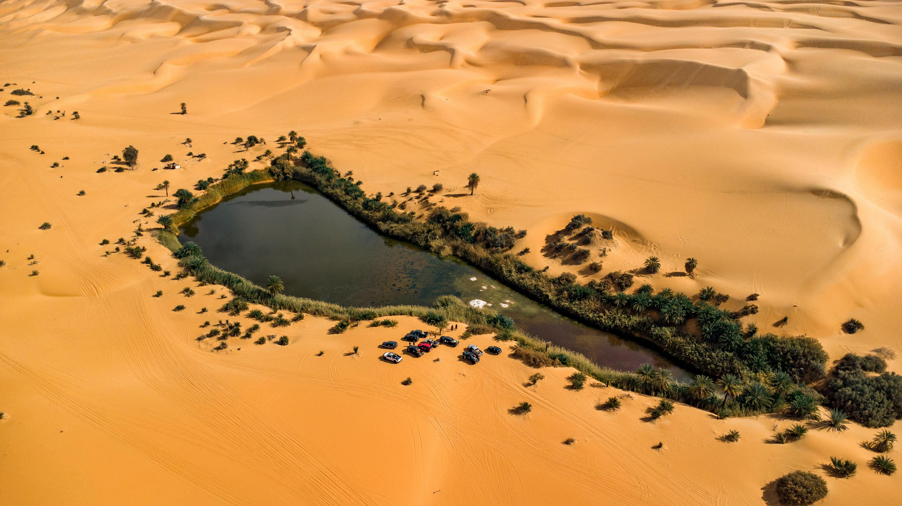

-
Siwa Oasis
Siwa Oasis is one of the most beautiful and unique destinations in Egypt's Western Desert. It is famous for its stunning natural landscapes, including vast olive and palm groves, and crystal-clear salt lakes that look like turquoise mirrors. The oasis is also known for its rich history, such as the ancient "Temple of the Oracle" where Alexander the Great once visited. What makes Siwa truly special is its unique culture and the warm hospitality of its people. Whether you want to swim in Cleopatra’s Bath or watch the sunset from Fatnas Island, Siwa offers an unforgettable experience of peace and beauty.✨
.jpeg)
.jpeg )
.jpeg)
.jpeg)
Farafra Oasis & The White Desert
Farafra Oasis & The White Desert Located in the New Valley Governorate of Egypt, Farafra Oasis is world-renowned for its proximity to the White Desert National Park. It is characterized by its surreal, snow-white chalk rock formations carved by wind erosion into alien-like shapes, such as the famous "Mushroom" rock. This unique geological wonder stands in stark contrast to the surrounding golden desert, offering one of the most otherworldly natural landscapes on Earth..✨
.jpeg)
.jpeg)
.jpeg)
.jpeg )
DaKhla Oasis
Dakhla Oasis is one of the most beautiful and enchanting oases in Egypt's Western Desert. It is located in the New Valley Governorate, between Farafra and Kharga oases. Surrounded by stunning pink cliffs and lush green palm groves, Dakhla offers a peaceful escape from the crowded cities. It is famous for its traditional mud-brick architecture and its hundreds of natural thermal springs, which are used for both irrigation and relaxation..✨


.jpeg)
Kharga Oasis
Kharga Oasis Located in the New Valley Governorate, the Kharga Oasis is the largest and most ancient of the five oases in Egypt’s Western Desert. It serves as a vital historical gateway, characterized by its vast desert plains and significant archaeological landmarks, most notably the Temple of Hibis and the Necropolis of Al-Bagawat, one of the earliest Christian cemeteries in the world. The oasis is a unique blend of modern development and deep-rooted history, featuring sprawling palm groves, natural thermal springs, and ruins that date back to Pharaonic, Persian, and Roman times..✨



.jpeg)